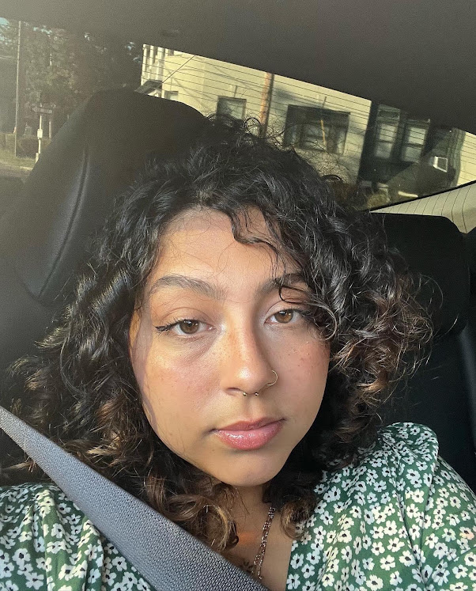

Get To Know Me
Hello! Thanks for coming to my page!
Here are some facts about me:
- I was born and raised in Bridgeport,CT. I hope to relocate one day.
- I am half Puerto Rican and half from the Dominican Republic.
- My favorite color is green and my favorite song is "Weird Fishes/Arpeggi" by Radiohead.
- I have a very big family - 4 siblings and 10 neices and nephews.
- I started learning to program in January 2024(I wish I learned sooner.)
